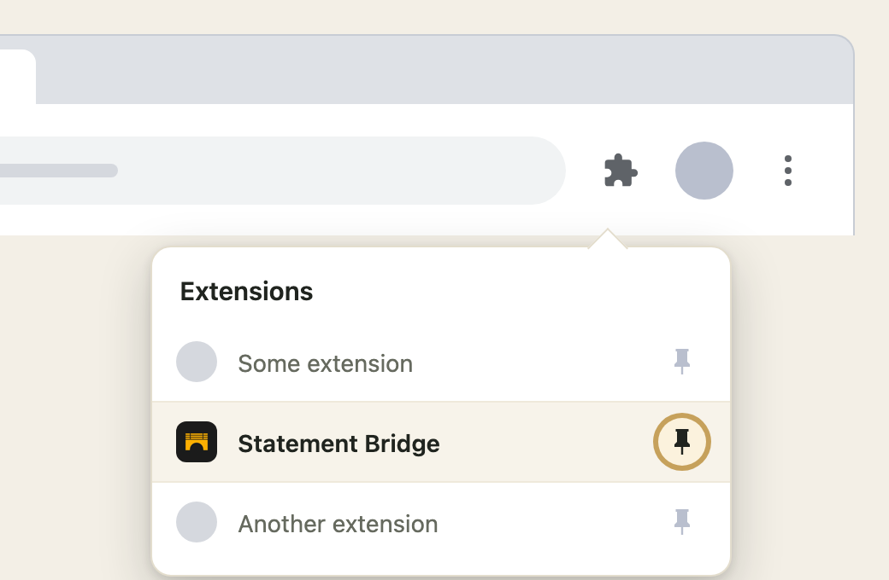

Your bank statements, in your spreadsheet.
Drop a statement in, and Statement Bridge turns it into clean rows you can copy straight into Google Sheets.
Everything happens on this device. No account, no server, nothing uploaded.
Click the puzzle-piece icon in the toolbar, then click the pin next to Statement Bridge.

This just keeps the icon in view. You can unpin it anytime.
Three steps, every month
Drop
Bring in the CSV or PDF your bank gives you.
Read
It finds the date, description and amount in every row.
Copy
Paste the table straight into Google Sheets.
The first statement from a bank takes about a minute to set up. Every one after that is drop, wait, copy.
Get your first statement
Download a statement from your bank's website, then come back here and drop it in.
Most banks have this under a name like Transaction History, Statement, or Account Activity, usually with a CSV or PDF download option and a date range you can pick.
A PDF statement works too, even a scanned one. Statement Bridge reads it on your computer either way.